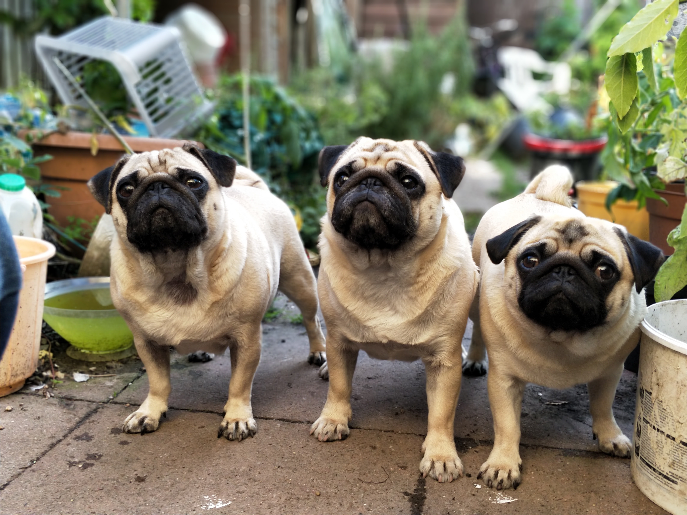
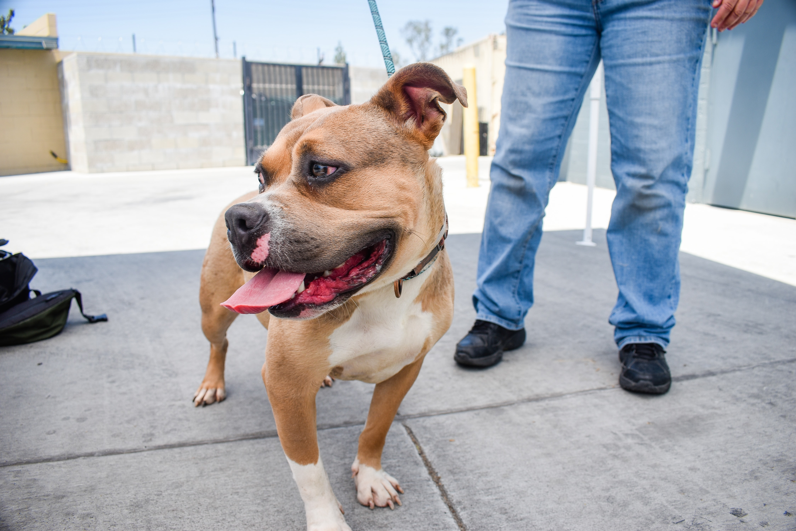

LMAS Waives Redemption Fees for Unclaimed Stray Pet; FOMAS Donates $33K to Cover Impoundment Fees
Louisville, Ky. (March 1,
2021) – Louisville Metro Animal Services (LMAS) announces
waived redemption fees for owners who claim their stray pet at
the LMAS’ Harshaw Family Foundation Animal Shelter, thanks to
a $33,000 donation from the non-profit organiz...
Read More

Friends of Metro Animal Services and The Honorable Kentucky Colonels provides crucial assistance to keep pets and families together, as many face economic hardships due to the COVID-19
(Louisville, Ky.) September
14, 2020 – Friends of Metro Animal Services (FOMAS) announces
families who are dealing with the economic impact of the
COVID-19 Pandemic will not face further financial hardship to
reclaim a lost pet from Louisville Metro Anima...
Read More

LMAS Still Open FOMAS Asking for Help of Louisville’s Only Open-Admission Shelter
(Louisville, Ky.) March 30,
2020 – Over the past few weeks, COVID-19 is creating new
challenges and many of those impact our community’s abandoned
and abused animals who have no control over their fate. “The
Friends of Metro Animal Services (FOMAS) is tha...
Read More